Palm Island
Palm Islands (engl. für Palmeninseln; arabisch جزر النخيل, DMG Ǧuzur an-Naḫīl) sind zwei (ursprünglich drei) künstliche Inselgruppen („The Palm, Jebel Ali“ und „The Palm, Jumeirah“), die seit 2001 in Dubai, Vereinigte Arabische Emirate, gebaut werden. Bislang ist nur „The Palm, Jumeirah“ bebaut und befahrbar, bei „The Palm, Jebel Ali“ ist bisher nur die Landgewinnung abgeschlossen und die ursprünglich geplante dritte Inselgruppe „The Palm, Deira“ wurde während der Landgewinnung eingestellt und in eine kleinere Inselgruppe umgestaltet (Deira Islands).[1] Jede der beiden Inselgruppen wurde in Form einer Palme angelegt. Der „Palmenstamm“ ist bei den Projekten „Jebel Ali“ und „Jumeirah“ 5 bzw. 4 km lang. Diese Projekte sind möglich, weil der Persische Golf ein Schelf- oder Epikontinentalmeer mit einer vergleichsweise geringen durchschnittlichen Wassertiefe ist. Die Inseln bestehen mindestens aus rund 100 Millionen Kubikmeter Fels und durch ein spezielles Rüttelverfahren verdichtetem Meeressand. Allein „The Palm, Jumeirah“ verlängert die Küstenlinie Dubais um ca. 100 km.[2] Beide Palm Islands sind im Besitz von Nakheel, der staatseigenen Entwicklungs- und Baugesellschaft. Der Gründer der Kabul Bank, Sherkhan Farnud, investierte etwa 160 Millionen Dollar in 35 Luxusvillen auf den Inseln.
More artificial islands in Dubai
- Jumeirah Islands
- The Universe
- Dubai Waterfront
 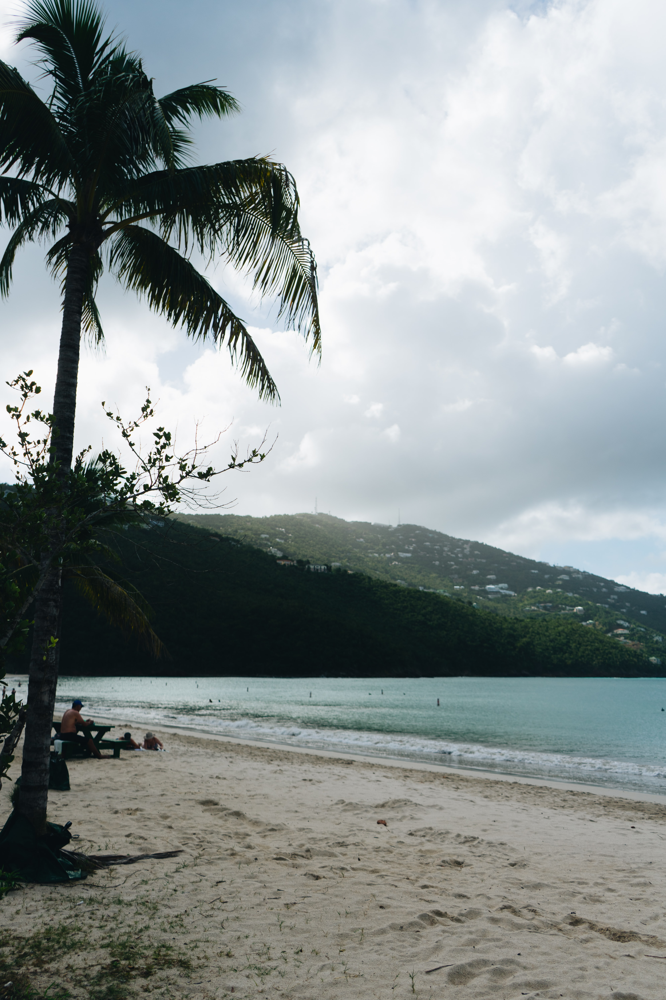
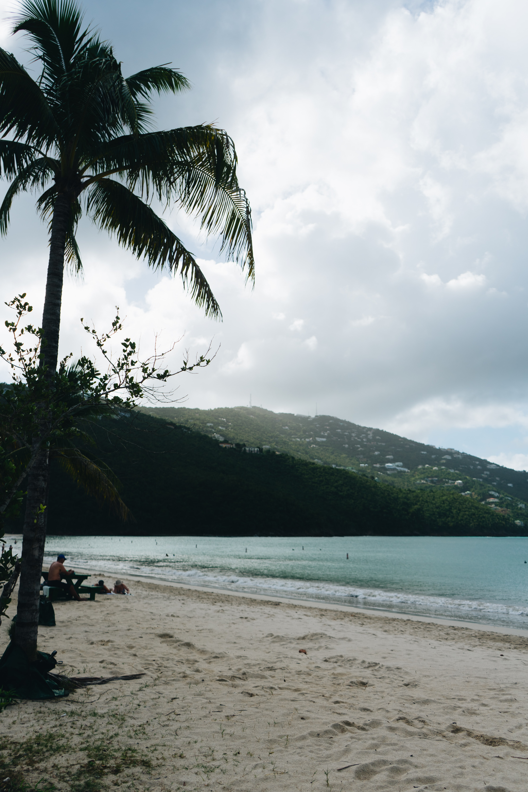

 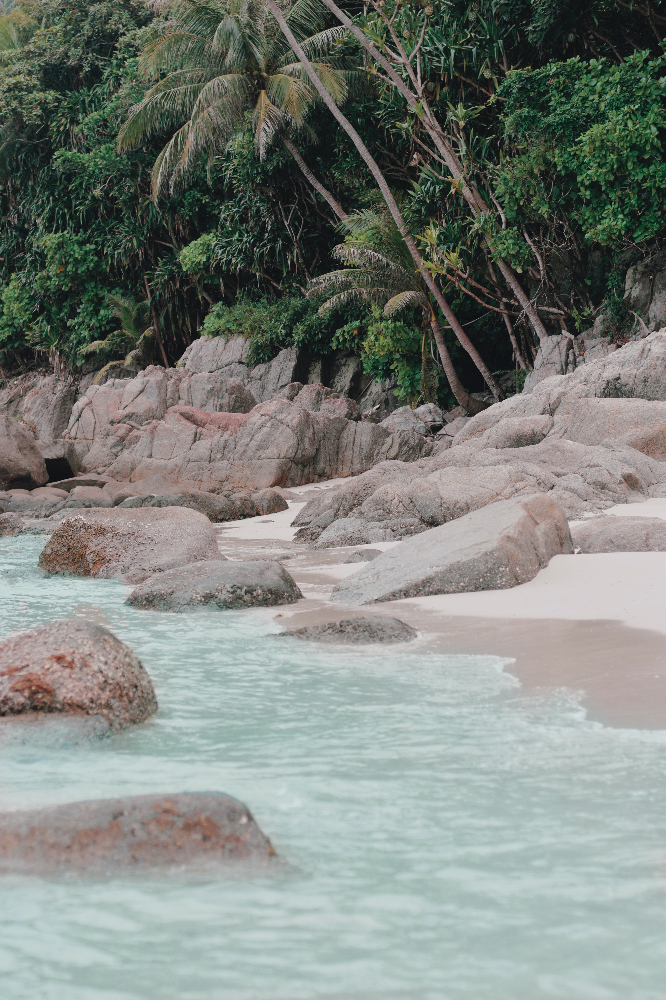
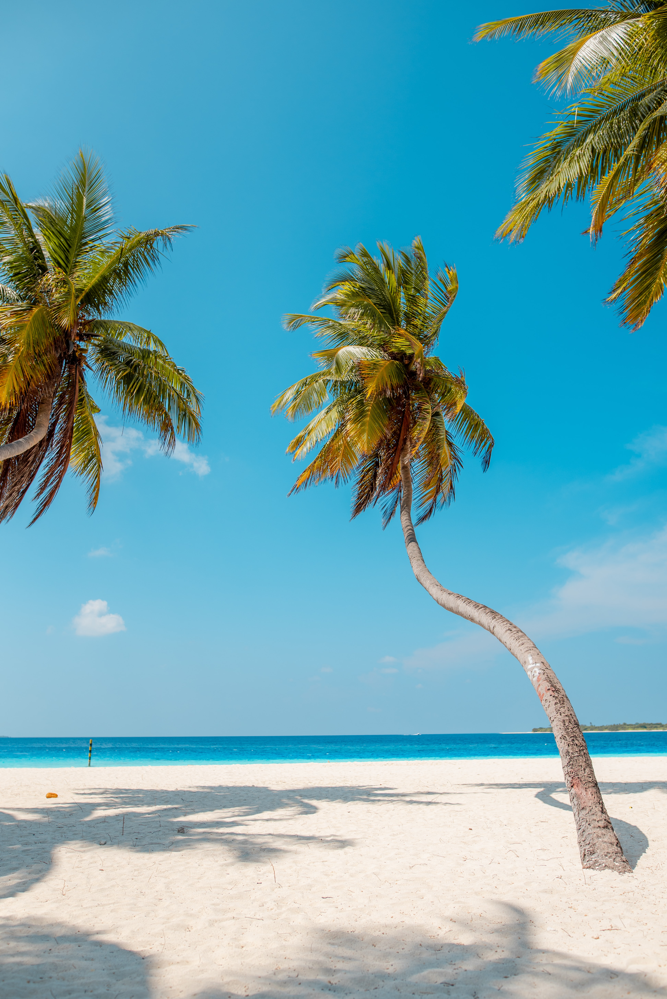
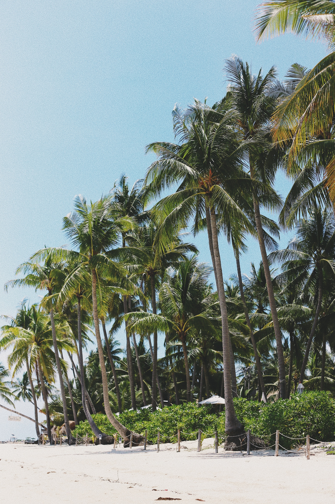
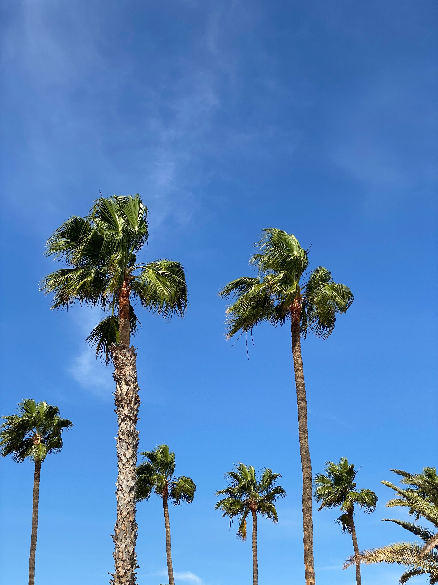
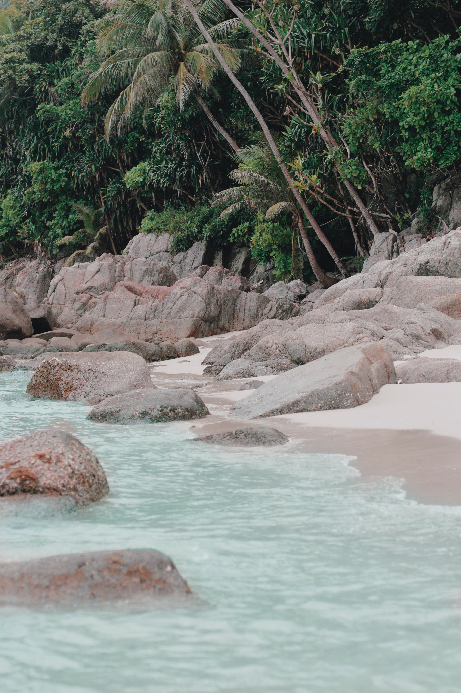
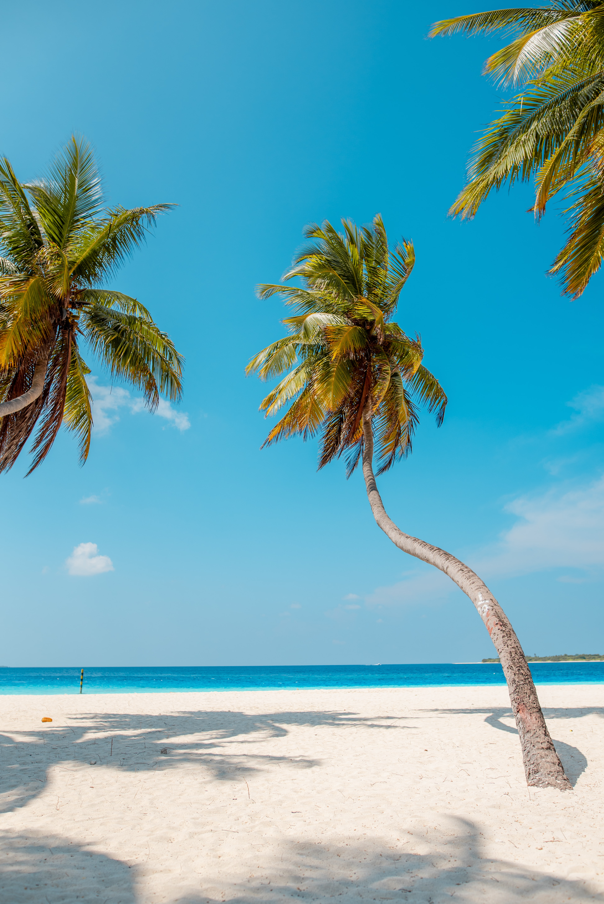
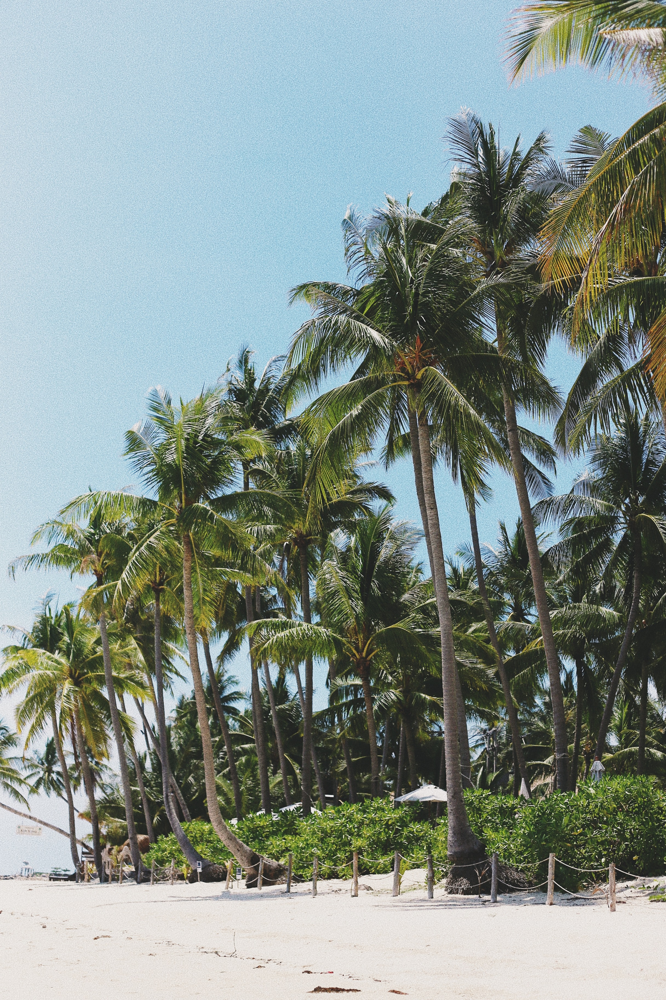
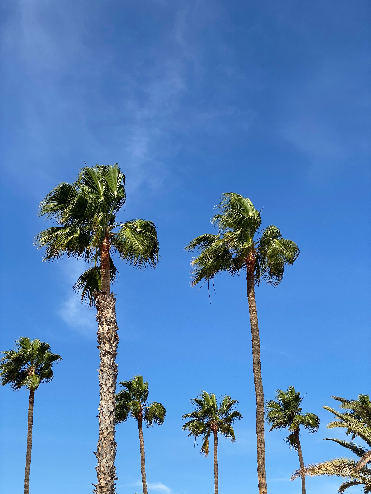
 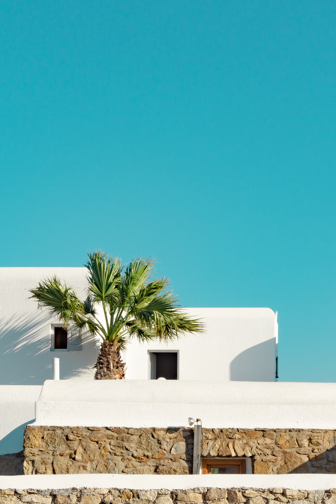
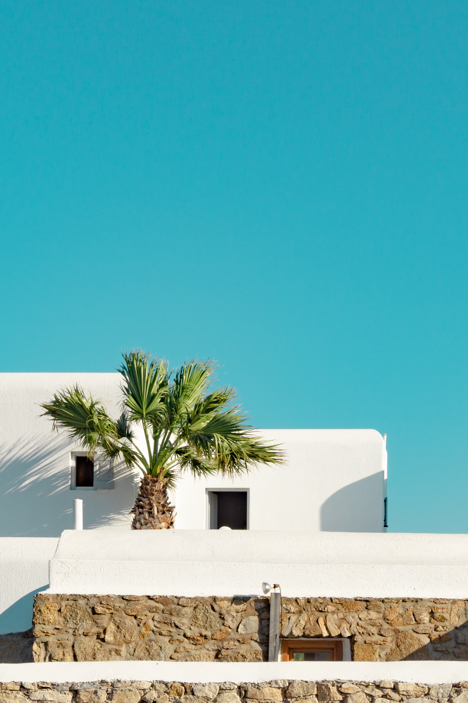